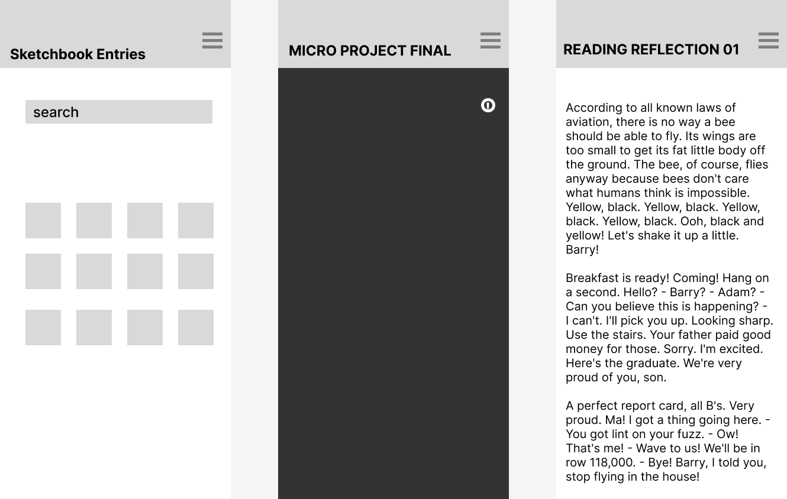

This week I worked on building out a mobile interface system with three page types: a home page, a micro-project page, and a reflection page. The main structural decision I made was to keep all pages consistent by using the same top navigation bar with a hamburger menu and a page title that updates depending on where you are. This makes the system feel more connected and helps users always know what page they're on while still having access to navigation. For the home screen, I changed it into a gallery layout where all my sketches are visible at once with an icon for each one. I realize I should add text to how each square is organized since there's no clear naming protocal on them. But the idea was to create a more intuitive way to browse through all the work and choose where to go. I wanted it to feel organized and direct.
On the micro-project page, I added a circular “i” icon that opens a popup with the instructions and description to address the issue of the instructions not being clearly separated from the interaction. Now, the information is in its own space, which makes it easier to read and doesn't compete with everything happening on the screen. It also gives users the choice to open or close it whenever they want, instead of forcing them through it. I wanted to show what the pop up screen button would look like since my last iteration had the pop up screen without the button to open it.
The reflection page is more simple, mostly just text with a clear heading structure. I kept the same navigation bar so it still feels like part of the same system, but the layout is more focused on readability instead of interaction. These changes connect back to my audit, especially around control and feedback. The navigation bar gives users a way to move around or leave at any time, and the popup helps make the instructions clearer without interrupting the experience. What still feels unresolved is the hamburger menu since I haven't fully figured out how the navigation inside it should be organized yet.
